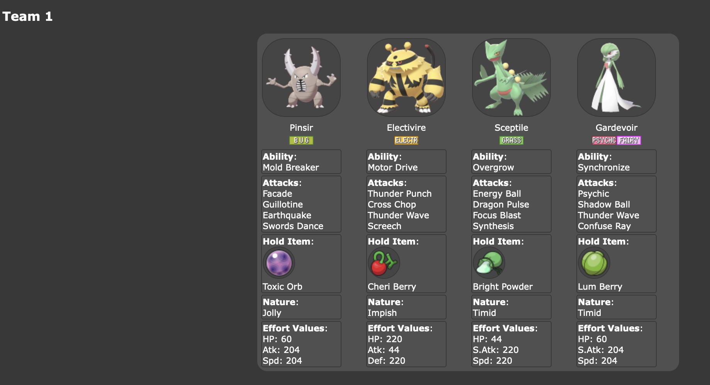
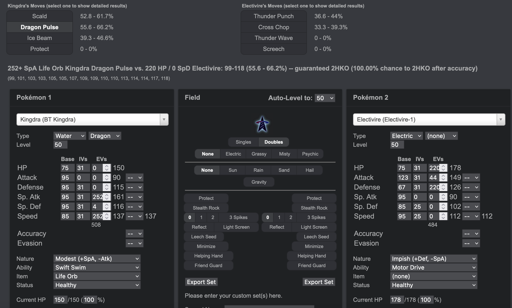
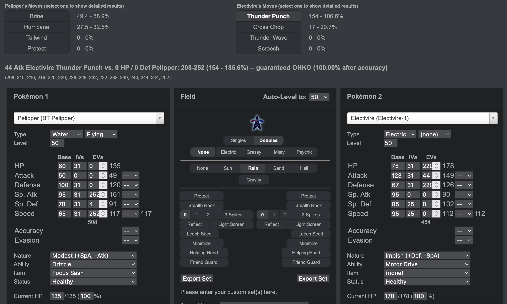

Preparation & Strategy
Held Items
Before getting ready to take on the Battle Tower, you'll need to do one last thing: Choose a held item for each of your Pokémon. Held items will generally boost the power of your Pokémon's moves, or give them some other small advantage like healing every turn or boosting its stats significantly. You cannot choose to give your Pokémon a held item another one on your team is holding. A list of Held Items is located on Game8's Held Item page.The most useful Held Items tend to be the following:
| Item | Purpose |
|---|---|
Choice Band |
An item to be held by a Pokémon. This curious headband boosts Attack but only allows the use of one move. |
Choice Scarf |
An item to be held by a Pokémon. This curious scarf boosts Speed but only allows the use of one move. |
Choice Specs |
An item to be held by a Pokémon. These curious glasses boost Sp. Atk but only allow the use of one move. |
Expert Belt |
An item to be held by a Pokémon. It's a well-worn belt that slightly boosts the power of supereffective moves. |
Focus Sash |
An item to be held by a Pokémon. If the holder has full HP, it will endure a potential KO attack with 1 HP. The item then disappears. |
Leftovers |
An item to be held by a Pokémon. The holder's HP is slowly but steadily restored throughout every battle. |
Life Orb |
An item to be held by a Pokémon. It boosts the power of moves but at the cost of some HP on each hit. |
Other useful items are restorative berries: Aguav Berry, Figy Berry, Iapapa Berry, Mago Berry, Salac Berry, and Wiki Berry. All these berries will restore 1/3 of the user's max HP when they're down to 1/4 HP or less. If your strategy involves stalling or tanks, berries as held items may be a good idea!
It's also important to note that your one-use Held Items will not disappear when used in the Battle Tower. This only happens when they're used outside the Battle Tower in normal trainer battles, so make sure you unequip items like the Focus Sash from your Pokémon before using them outside the Battle Tower!
Once you've selected your held items, attach them to your Pokémon! You'll want to make sure you've worked out the order your Pokémon will be sent out in, and any Pokémon that's partnered with another for Doubles (such as Pelipper and Kingdra leading together) should be the first two slots in your party.
Learn how to use the Battle Damage Calculator
Next, you should take some time to accurately enter your Pokémon team into this Battle Calculator. Make sure the tab at the top is changed to BDSP, as it will select SV by default! You can enter your team by copying and pasting their information from Pokémon Showdown. If you select one of your Pokémon in Showdown and click Import/Export, it will generate a block of text for you of your Pokémon's information. This is the exact format the Battle Calculator uses. Paste this into the "Custom Set" text box, and hit save. Alternatively, you can find each of your Pokémon's species in the drop-down menu, use the Blank Set to enter their information, and click "Export Set" and save their information that way. Make sure you give it a name like "Battle Tower [SPECIES]" so it's easily distinguished from other sets of that species. Do this for each of your Pokémon.As you'll have noticed by now, there are all kinds of sets for every Pokémon species in the game. The calculator is pre-loaded with all the possible iterations of that Pokémon you could possibly go up against in the Battle Tower. You should use this calculator with Serebii's Battle Tower trainer reference! Toward the middle of the page, you should see two drop-down menus - one for Singles Battles, and one for Doubles. Let's go over an example of how to use these tools together.
 Let's say you're in a Doubles Battle against Ace Trainer Abbey. You'll know it's Ace Trainer Abbey because it will say "Trainer Name challenges you to a battle!" when your battle begins. It's very important to pay attention the exact name/s of the trainer/s so you can look them up on Serebii. The drop-down menus on Serebii are pre-loaded with every single trainer you could possibly face, all of their possible teams, and even all of their possible teams when partnering up with another NPC. Yes, NPCs can use more than one team! It's usually random, and sometimes the teams only have one or two differences between them, so be sure to examine that information carefully.
Make sure you have that Battle Calculator open in another tab. In this case, if Abbey sent out Pinsir and Electivire, I'd know for sure she's using her Team 1 roster. Now, if I'm using my Doubles Rain Team, I'd have Pelipper and Kingdra on the field right now. Using the Battle Calculator, you can work out with a great deal of accuracy how much damage your Pokémon would do to each other in the best case scenario or the worst case scenario. I'd be most worried about Electivire (since Pelipper has a 4x weakness to electric) but I'm also worried about Pinsir, since it has Guillotine - a move that will make the target faint instantly if it hits. It only has a 30% chance of hitting, but those RNG odds work against you more often than you think, so don't get confident.

First, let's break things down here. At the top, you can see all four of Kingdra's moves on the left and all four of Electivire's moves on the right. The percentage ranges next to each move is the possible range of damage those moves could possibly do to their opponent. For example, Dragon Pulse could do anywhere from 55.6% damage to 66.2%. If you click it, you can see that using this move twice in a row would result in a guaranteed KO (knock-out) - providing Kingdra is still alive, of course. Conversely, you can see Thunder Punch could do anywhere from 36.6% damage to 44% to Kingdra. So, not a huge danger for Kingdra.
Looking further down at the Pokémons' stats, it's now incredibly easy to compare them. There's also an option in the middle to select the stats for the Field. Thanks to Pelipper's Drizzle, it's Raining, so select the option for "Rain". You should notice the damage percent for Scald went up significantly - at most, it can now do 92% damage to Electivire! Additionally, Kingdra's speed went up from 137 to 274! Kingdra went from just barely being able to outspeed Electivire's speed stat of 112 to effortlessly outspeeding it.
Now, let's compare Pelipper to Electivire. After loading up your Pelipper's information on the left, things look a bit dicier for the poor gull Pokémon.

As you can see, Thunder Punch has a 100% chance of OHKOing (one-hit knock-out) Pelipper. That's definitely not good! However, if you look at Pelipper's speed stat, you can see it can just barely outspeed Electivire, as it's sitting at 117 versus Electivire's 112. That means both Kingdra AND Pelipper will move before Electivire. Your best strategy here would be to use Scald with Kingdra on Electivire, then Brine with Pelipper on Electivire to guarantee it'd be knocked out before doing any damage to anyone. While Pinsir's Guillotine is scary, it still only has a 30% chance of hitting, and it could use any one of its three other moves anyway. As it is, none of its moves could possibly knock out (or do any significant damage to) Kingdra OR Pelipper, unless it gets extremely lucky with Guillotine.
But there's still another excellent strategy on your plate! You could use Scald with Kingdra on Electivire, and use Protect with Pelipper - almost 100% of the time when Pelipper is on the field and the opponent has an electric move, it will target Pelipper with that electric move. This would mean Pelipper would protect itself from Electivire's Thunder Punch AND potentially any attacks from Pinsir! On your next turn, assuming Pinsir didn't get lucky with Guillotine on Kingdra, you could use Brine on Electivire to finish it off and Scald on Pinsir, which would result in a guaranteed OHKO. With that, both Pokémon would be knocked out and you'd be up against Gardevoir and Sceptile.
As you can see, this calculator is an excellent tool for mapping out the best strategy for each battle to ensure everything ends in your favor. This is especially important when you get to the tougher battles, which usually occur around battles 40-49, and 78-99. Even if you're confident you'll win, it never hurts to take an extra few seconds to double-check to make sure you're not missing anything.
Once you're comfortable using this tool, keep the Serebii Battle Tower reference and this calculator open in their own tabs, because you're now ready to start battling in the Battle Tower!
» Battle